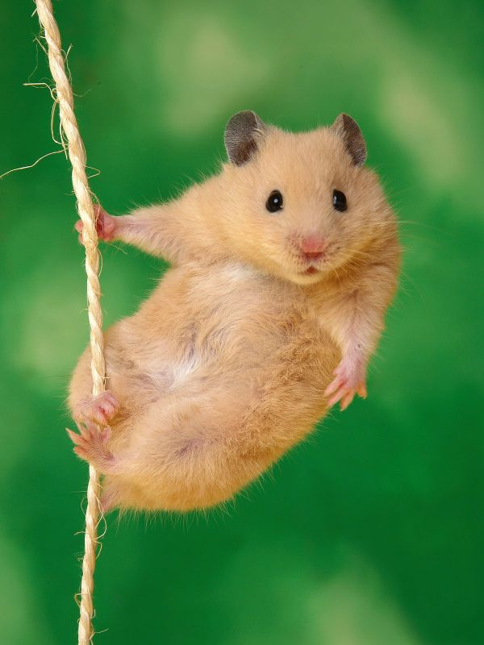
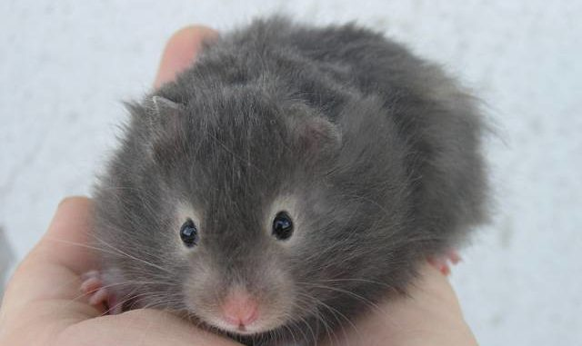

Сирийские хомяки
Сири́йский, или золоти́стый, хомячо́к, также переднеазиа́тский хомя́к (лат. Mesocricetus auratus) — грызун семейства хомяковых, обитающий в окрестностях сирийского города Алеппо, а также на востоке Турции. Является популярным животным-компаньоном.

Внешний вид
Сирийский хомяк также известен как «хомяк золотистый», а всё благодаря распространенному у этой разновидности нежному рыжевато-песчаному окрасу, настоящему подарку природы.
Этот зверек обладает довольно крупными размерами, достигает 13,5 см в длину, самки чуть крупнее самцов.
У хомячка симпатичные глазки-бусинки, средние, округлые уши, короткие, подвижные лапки и крошечный хвостик, практически полностью спрятавшийся за пушистой шерсткой.
Вопреки названию «хомяк золотистый», окрас шерстки грызунов может быть также белым, серебристым, черным и коричневым. Преимуществом разновидности является не только яркая гамма окраса, но и особенности шерстного покрова: хомячки могут быть короткошерстными, длинношерстными или же вовсе бесшерстными.
Виды окраса
- Золотистый;
- Кремовый;
- Белый;
- Дымчато-жемчужный;
- Желто-коричневый;
- Черный;
- Темно-серый.

Среда обитания
Как отдельный вид сирийские хомяки произошли от диких грызунов, обитавших в пустынном климате Сирии, недалеко от города Алеппо. Их первыми селекционерами считаются англичане, благодаря которым мы сегодня можем наблюдать разнообразных по цвету шерстки сирийских хомяков. А в США зверьков впервые стали разводить целенаправленно, как прекрасно зарекомендовавших себя домашних питомцев. Кроме того, в Америке были открыты различные породы сирийских хомяков, то есть появилась породная классификация грызунов. На воле же эти грызуны предпочитают пустынные территории Малой Азии, в земле которой сирийские хомяки устраивают для своего жилья неглубокие норки.
Питание
Питание особей из семейства хомяковых в дикой природе и дома весьма различное. Важно помнить, что еда со стола, которую привык употреблять человек, не подходит для подкормки домашнего питомца.
В природе длинношерстный сирийский хомяк кушает все, что находит самостоятельно. В теплое время года это могут быть ягоды, овощи, сухие палочки. Это животное не имеет представление о том, что полезно, а что нет. Для того, чтобы выжить в условиях конкуренции сирийские хомяки едят все, что видят и что пахнет.
Категорически запрещено:
- Сладкое;
- Жирное;
- Соленое.
Грызуны очень любят все сладкое, но их пищеварительная система устроена так, что сахар не перерабатывается. Такая особь не протянет и года. Интересным фактом о сирийских хомяках является то, что в дикой природе они способны поедать своих родившихся детенышей. Идеальной пищей на воле являются подсохшие фрукты и овощи.
Как ухаживать за сирийскими хомяками дома?
Вернуться на главную страницу